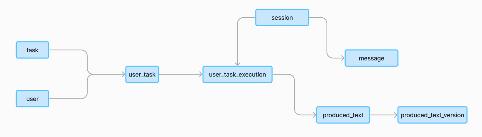
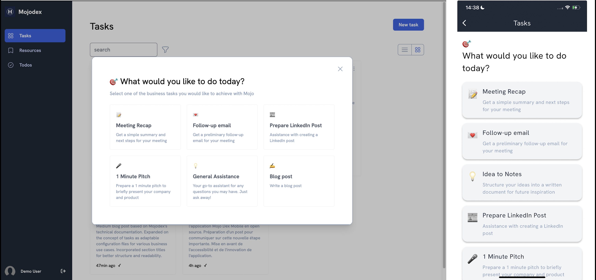
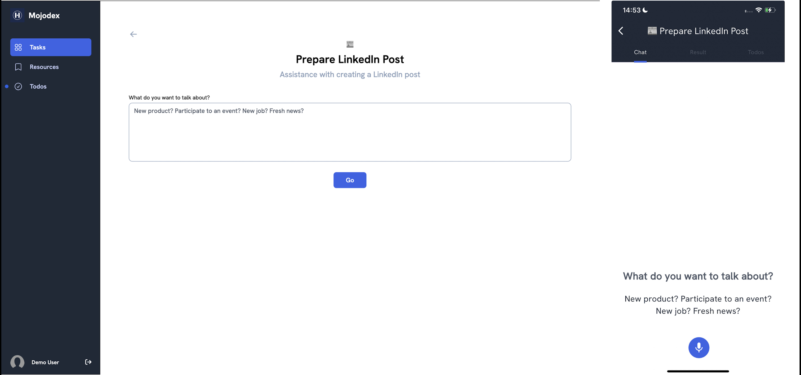
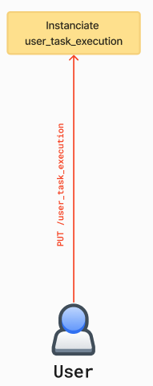
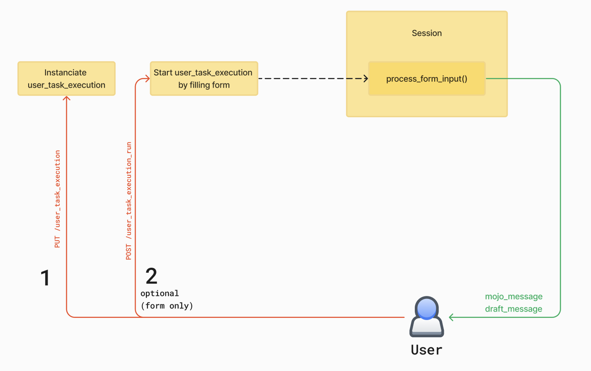
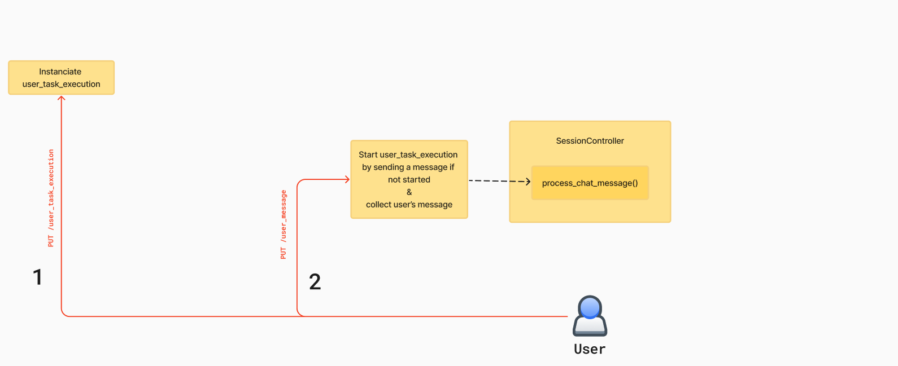
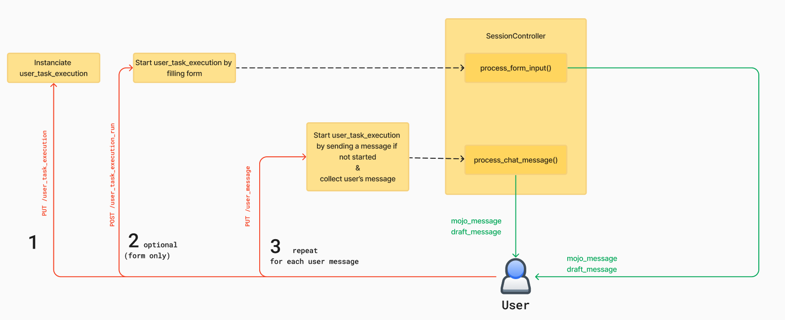

Instruct Task Execution Workflow in Mojodex
This document provides an overview of the concept related to the task execution process in the Mojodex platform and describes the sequence of events that occur from the moment a user initiates a new task execution until the task is completed and the result is delivered.
Main concepts
The task execution process involves several concepts matching database tables.
Task
- Task concept is fully described in this doc. Basically, a task is a some work the assistant can help the user with. A task is fully configurable. A task can be of type "instruct" or "workflow".
This documentation
User Task
- Each user has its own set of tasks it can launch with Mojodex. A
user_taskstands for the association between a user and a task. Those association are defined by user's product (detailled in a coming doc).
User Task Execution
- A
user_task_executionrepresents the instance of a task being executed by a user. It captures various details such as the start time and any relevant metadata pertaining to the execution of a specific task by a user.
Note, sometimes refered as
task_executionfor short.
Session
- A
sessionrepresents an interaction between the user and the assistant. It captures the messages exchanged between the user and the assistant, as well as the state of the conversation at any given time. Auser_task_executionalways needs asessionfor the user and its assistant to co-work on the task.
Note: With existing interface, a
user_task_executionhas 1session. 1sessioncan have multipleuser_task_execution, for example using a more general chat with routing to specific tasks.
Message
- A
messagerepresents a single message exchanged between the user and the assistant within a session. It captures the content of the message, sender, timestamp of the message, and other relevant metadata depeding on the type of message. In the database, ajsonfield is used to store the content of the message, allowing high flexibility regarding stored data.
Produced text
- A
produced_textrepresents the result of a task execution. It contains all versions of the result as references toproduced_text_version
Produced text version
- A
produced_text_versionrepresents a version of the result of a task execution. It contains the content of the result and the date of the version.

Task execution workflow
The task execution workflow is a sequence of events that occur from the moment a user initiates a new task execution until the task is completed and the result is delivered. The workflow is described below.
1. User Task Execution Creation
Creation of execution is done as soon as the user hits the card of the task they want to create.

This generates a call to PUT /user_task_execution to the backend (backend/app/routes/user_task_execution.py), specifying the user_task the user wants to execute.
This call creates a User Task Execution instance in the database and a session if not already exists (which is the case in current Mojodex implementations).
from mojodex_core.entities.db_base_entities import MdUserTaskExecution
[...]
class UserTaskExecution(Resource):
[...]
def put(self, user_id):
[...]
session_creation = self.session_creator.create_session(user_id, platform, "form")
[...]
session_id = session_creation[0]["session_id"]
[...]
task_execution = MdUserTaskExecution(user_task_fk=user_task_pk,
json_input_values=empty_json_input_values, session_id=session_id)
db.session.add(task_execution)
db.session.commit()
This call also returns the input fields to display to the user in the interface so that user have the instructions to start. Those input fields are the one defined in the task's json configuration file as json_input.
return {**{"user_task_execution_pk": task_execution.user_task_execution_pk,
"json_input": json_input,
"actions": predefined_actions,
"text_edit_actions" : recover_text_edit_actions(user_task_pk=user_task_pk)
}, **session_creation[0]}, 200


2. User Task Execution Start
From those instructions, there are 2 ways to start the task:
2.1. User Task Execution Start from filled form
This is the method used in the web interface. The user fills the form and submit it. This generates a call to POST /user_task_execution_run to the backend (backend/app/routes/user_task_execution_run.py), specifying the user_task_execution_pk received at previous step and the values of filled form.
Resource associated to the route updates the User Task Execution instance and instanciates a Session(backend/app/models/session/session.py).
Finally, it launches in a parallel thread the start of the task by running session.process_form_input method.
[...]
class UserTaskExecutionRun(Resource):
[...]
def post(self, user_id):
[...]
user_task_execution.start_date = datetime.now()
db.session.commit()
[...]
from models.assistant.session import Session as SessionModel
session = SessionModel(user_task_execution.session_id)
def launch_process(session, app_version, platform, user_task_execution_pk, use_message_placeholder, use_draft_placeholder):
session.process_form_input( app_version, platform, user_task_execution_pk, use_message_placeholder=use_message_placeholder, use_draft_placeholder=use_draft_placeholder)
return
[...]
server_socket.start_background_task(launch_process, session, app_version, platform, user_task_execution_pk, use_message_placeholder, use_draft_placeholder)
The Session is the epicenter of task execution. The function process_form_input() will:
- Asynchronously call the Background to ask for a task execution title and summary generation
- Prepare first assistant's response to the user.
The Task Manager detailled flow is described in part 3.

2.2. User Task Execution Start from user message
On the mobile app, the user sees the same instructions as in the web's form but is free to send to the assistant the first message they want.
This first message generates a call to PUT /user_message (backend/app/routes/user_message.py) specifying the user_task_execution_pk received at previous step and the message content.
This route can be called for any user message, at any step in the task execution process to send user's message to backend. If it appears the User Task Execution identified by the user_task_execution_pk is not started, it will start it.
[...]
class UserMessage(Resource):
[...]
def put(self, user_id):
[...]
user_task_execution = db.session.query(MdUserTaskExecution) \
.join(MdUserTask, MdUserTaskExecution.user_task_fk == MdUserTask.user_task_pk) \
.filter(MdUserTaskExecution.user_task_execution_pk == user_task_execution_pk) \
.filter(MdUserTask.user_id == user_id) \
.first()
[...]
if user_task_execution.start_date is None:
user_task_execution.start_date = datetime.now()
db.session.commit()
[...]
Once the User Task Execution is updated, the Resource will instanciate a Session object (backend/app/models/session.py), responsible for managing user and assistant messages exchanges.
Finally, it launched a parallel thread in which it runs method process_chat_message of Session.
[...]
class UserMessage(Resource):
[...]
def put(self, user_id):
[...]
from models.assistant import Session as SessionModel
session = SessionModel(session_id)
session_message = {"text": message.message["text"], "message_pk": message.message_pk,
"audio": not "text" in request.form, "user_task_execution_pk":user_task_execution_pk,
"home_chat_pk": home_chat.home_chat_pk if home_chat else None,
"message_date": message_date.isoformat(),
"use_message_placeholder": use_message_placeholder, "use_draft_placeholder": use_draft_placeholder}
server_socket.start_background_task(session.process_chat_message, "user_message", session_message)
[...]
The process_chat_message method will:
- Check the message is a task execution message
- Instanciate a Task Manager
- Call appropriate assistant_response_generator to generate the assistant's response to the user.
[...]
class Session:
[...]
def process_chat_message(self, event_name, message):
[...]
response_event_name, response_message = self.__manage_task_session(message, app_version)
[...]
def __manage_task_session(self, platform, user_task_execution_pk, use_message_placeholder=False, use_draft_placeholder=False):
[...]
return self.__manage_instruct_task_session(platform, user_task_execution_pk, use_message_placeholder, use_draft_placeholder)
[...]
def __manage_instruct_task_session(self, platform, user_task_execution_pk, use_message_placeholder=False, use_draft_placeholder=False):
[...]
tag_proper_nouns = platform == "mobile"
task_assistant_response_generator = InstructTaskAssistantResponseGenerator(mojo_message_token_stream_callback=self._mojo_message_stream_callback,
draft_token_stream_callback=self._produced_text_stream_callback,
use_message_placeholder=use_message_placeholder,
use_draft_placeholder=use_draft_placeholder,
tag_proper_nouns=tag_proper_nouns,
user=self._get_user(),
session_id=self.id,
user_messages_are_audio= platform=="mobile",
running_user_task_execution_pk=user_task_execution_pk)
response_message = task_assistant_response_generator.generate_message()
response_language = task_assistant_response_generator.context.state.current_language
return response_message, response_language
[...]
[...]
The Task Manager detailled flow is described in part 3.

3. InstructTaskAssistantResponseGenerator
The InstructTaskAssistantResponseGenerator is the epicenter of task execution. It is responsible for managing the execution of a task by the user and the assistant.
Its inheritance tree is as follows:
- AssistantMessageGenerator: responsible for generating the assistant's message to the user
- AssistantResponseGenerator: responsible for generating the assistant's response to the user (used in the context of a response)
- TaskEnabledAssistantResponseGenerator: Specified in collecting the task execution context
- InstructTaskEnabledAssistantResponseGenerator: Holds the prompt and instruct tasks tags management
- InstructTaskAssistantResponseGenerator
The core method of those object lies in AssistantMessageGenerator method generate_message.
class AssistantMessageGenerator(ABC):
[...]
def generate_message(self):
[...]
placeholder = self._handle_placeholder()
if placeholder:
return placeholder
prompt = self._render_prompt_from_template()
llm_output = self._generate_message_from_prompt(prompt)
if llm_output:
return self._handle_llm_output(llm_output)
return None
[...]
Let's break this method down.
Note: We won't deal with placeholders, those are basically useful to return a placeholder instead of a LLM generated message for development purposes.
3.1. Prompt preparation
First, the assistant collects all the data it needs to answer the user's message. Those data will be used to render Jinja2 template and generate the assistant's prompt.
Some data are stored in context, other in KnowledgeManager and some need specific calls to database to be collected.
class InstructTaskEnabledAssistantResponseGeneratorTaskEnabledAssistantResponseGenerator, ABC)::
[...]
def _render_prompt_from_template(self):
try:
mojo_knowledge = KnowledgeManager.get_mojo_knowledge()
user_datetime_context = KnowledgeManager.get_global_context_knowledge()
user_company_knowledge = KnowledgeManager.get_user_company_knowledge(self.context.user_id)
available_user_tasks = self.__get_available_user_instruct_tasks()
task_specific_instructions = self.__get_specific_task_instructions(self.running_task) if self.running_task else None
produced_text_done = self.context.state.get_produced_text_done()
return self.prompt_template.render(mojo_knowledge=mojo_knowledge,
user_datetime_context=user_datetime_context,
username=self.context.username,
user_company_knowledge=user_company_knowledge,
tasks = available_user_tasks,
running_task=self.running_task,
task_specific_instructions=task_specific_instructions,
produced_text_done=produced_text_done,
audio_message=self.context.user_messages_are_audio,
tag_proper_nouns=self.tag_proper_nouns,
language=None
)
except Exception as e:
raise Exception(f"{InstructTaskEnabledAssistantResponseGenerator.logger_prefix} _render_prompt_from_template :: {e}")
[...]
💡The advanced prompting strategy used in the Task Manager is described in detail in the following article: Advanced Prompting Strategies for Digital Assistant Development
The Jinja2 prompt is rendered using collecting data. At next step, it will be used as the content of initial system message of list of messages to send to LLM.
3.2. LLM call
The LLM call is provided with various parameters and a stream callback function that will stream assistant's tokens on the go to user's interface.
class AssistantResponseGenerator(AssistantMessageGenerator, ABC):
[...]
def _generate_message_from_prompt(self, prompt):
[...]
conversation_list = self.context.state.get_conversation_as_list(self.context.session_id)
messages = [{"role": "system", "content": prompt}] + conversation_list
responses = model_loader.main_llm.invoke(messages, self.context.user_id,
temperature=0,
max_tokens=4000,
label="CHAT",
stream=True, stream_callback=self._token_callback)
return responses[0].strip() if responses else None
[...]
[...]
3.3. Response analysis
Once LLM call completed, we can analyse the answer.
The prompt asks for the assistant to spot the language used by the user in the first information they provided. This is useful to adapt the assistant's response to the user's language dynamically during the task. To check if the assistant spotted the language, we look for the language tag in the response. If found, we update the session with the language and commit the change.
class AssistantResponseGenerator(AssistantMessageGenerator, ABC):
[...]
def __manage_response_language_tags(self, response):
"""
Remove language tags from the response and update the language in the context
:param response: response
"""
try:
if AssistantResponseGenerator.user_language_start_tag in response:
try:
self.context.state.current_language = AssistantMessageGenerator.remove_tags_from_text(response, AssistantResponseGenerator.user_language_start_tag,
AssistantResponseGenerator.user_language_end_tag).lower()
except Exception as e:
pass
except Exception as e:
raise Exception(f"__manage_response_language_tags:: {e}")
[...]
Then, we check for specific tags that will determine the nature of the response.
class InstructTaskEnabledAssistantResponseGenerator(TaskEnabledAssistantResponseGenerator, ABC):
[...]
def _manage_response_task_tags(self, response):
[...]
if TaskInputsManager.ask_user_input_start_tag in response:
return self.task_input_manager.manage_ask_input_text(response)
return {"text": response}
[...]
def _manage_execution_tags(self, response):
[...]
if ExecutionManager.execution_start_tag in response:
return self.execution_manager.manage_execution_text(response, self.running_task, self.running_task_displayed_data,
self.running_user_task_execution, self.task_executor,
use_draft_placeholder=self.use_draft_placeholder)
[...]
def _manage_response_tags(self, response):
execution = self._manage_execution_tags(response)
if execution:
return execution
return self._manage_response_task_tags(response)
For now, 3 types of responses can be generated. Those 3 types are each handled by a specific object:
TaskInputsManager
- TaskInputsManager handles a response indicating the assistant needs more information from the user to complete the task. In this case, the response format will include a question addressed to the user enclosed in specific tags. Basically, the TaskInputsManager will extract the question addressed to the user from the LLM response by removing the tags so that it can be displayed properly to the user.
3.5. Response to user
Finally, the method generate_message returns the assistant's message that should be sent to the user (or None if it was a draft_message managed by TaskExecutionManager).
Then, the session will get this message, the associated event_name and the eventual detected language, generate audio version if platform is mobile and send mojo message to the user using socketio.
4. Iterating on a task
The task execution process is an iterative process. The user and the assistant exchange messages until the user is satisfied with the produced result.
When the assistant sends a message to ask for any precision or when they want to ask for an edition, the user can send a message through the chat interface to interact with the assistant.
When the user sends a message during a task execution, the message is sent to the backend through a PUT user_message call and the same process as described in part 2.2 is repeated.
